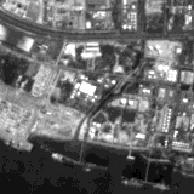
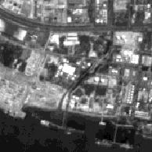

Resolution
Resolution is defined as the ability of an entire remote-sensing system, including lens antennae, display, exposure, processing, and other factors, to render a sharply defined image. Resolution of a remote-sensing is of different types like Spatial, Spectral, Radiometric and Temporal Resolutions.
Radiometric Resolution
While the arrangement of pixels describes the spatial structure of an image, the radiometric characteristics describe the actual information content in an image. Every time an image is acquired on film or by a sensor, its sensitivity to the magnitude of the electromagnetic energy determines the radiometric resolution. The radiometric resolution of an imaging system describes its ability to discriminate very slight differences in energy. The finer the radiometric resolution of a sensor, the more sensitive it is to detecting small differences in reflected or emitted energy.

Radiometric resolution is defined as sensors ability to detect and record slight variations in the amount of EMR reaching the sensor. It is normally indicated by the number of quantization levels used to measure reflectance. This determines the distinguish ability of ground features differing only slightly in their reflectance or radiance. It is obtained by dividing the total range of the signal into a large number of just discriminate levels. For example, output of Landsat MSS bands 4, 5, 6 is divided into 128 levels whereas Landsat Thematic Mapper output is divided into 256 levels.
The radiometric resolution is a measure of how many grey levels are measured between pure black and pure white spectral band. It characterizes the ability to distinguish the finer variations of the reflected or emitted radiation from the different objects in a given spectral band. The radiometric resolution is measured in 'bits'.
Imagery data are represented by positive digital numbers which vary from 0 to (one less than) a selected power of 2. This range corresponds to the number of bits used for coding numbers in binary format. Each bit records an exponent of power 2 (e.g. 1 bit=2 1=2). The maximum number of brightness levels available depends on the number of bits used in representing the energy recorded. Thus, if a sensor used 8 bits to record the data, there would be 28=256 digital values available, ranging from 0 to 255. However, if only 4 bits were used, then only 24=16 values ranging from 0 to 15 would be available. Thus, the radiometric resolution would be much less. Image data are generally displayed in a range of grey tones, with black representing a digital number of 0 and white representing the maximum value (for example, 255 in 8-bit data). By comparing a 2-bit image with an 8-bit image, we can see that there is a large difference in the level of detail discernible depending on their radiometric resolutions.(source: www.ccrs.nrcan.gc.ca)

Consider, for example, a range of radiation intensities (brightness levels). This continuous range can be subdivided into a set of values of steadily increasing intensity. Each subdivision is a "level" that in a black and white rendition of a scene is represented by some degree of grayness. A two level rendition would consist of just black and white (all intermediate levels have been assigned to one or the other). A four level scene would include two intermediate gray levels). A 64 level image would have a range of distinguishable increasing (from black) gray tones up to the highest (white). Most sensors convert intercepted radiation into a digital form, which consists of a number that falls within some range of values. Radiometric resolution defines this range of values. A sensor with 8-bit resolution (e.g. Landsat TM) has a range of 256 levels, or 28, values (since 0 is one level, the range is 0-255). A 6-bit sensor (e.g. Landsat Multispectral Scanner (MSS) 1) has a range of 64, or 26, level values. To illustrate how this affects a scene representation, consider these panels (produced by Dr. S. Liew) that depict a scene at 21, 22, 23, and 24, that is, 2(upper left), 4, 8, and 16 (lower right) gray levels, or quantized radiometric values: (Sourcerst.gsfc.nasa.gov)


 



- In this experiment you are provided with a wavelength slider according to which you can adjust the wavelength emmited by the spectrometer to the object placed on the table. You are provoded with four such objects.
- Start the experiment by selecting wavelength from slider.Reflected ray will be captured by the lens of the spectrometer and reflectance is calulated.
- Take observations and fill them in the boxes against wavelength and reflectance, provided in the parallel pane, and mark the points.
- Likewise mark atleast 5-6 points and generate graph.
- Now, press Compare button to compare your observed graph with the original graph.

Q1. In order to separate snow from clouds in remotely sensed data, you would use a band in
Visible region (400 to 700nm)
Near Infrared region (700 to 1300 nm)
Middle Infrared region (1500 to 2400 nm)
Thermal region (8000 to 14000 nm)
Microwave region (1 mm and greater)
Q2. What determines the colour of an object.
Wavelength
Average reflectance
Highest reflectance value
None of the above
Q3. Forests look green. Can one distinguish between Tree species using EMR reflectance spectrum
Yes
No
May be
None of the above

Procedure for the experiment is as follows. ___________________________________________________________________________________________________________________________________________

- Introduction to Remote Sensing by James B. Campbell
- Remote Sensing and Image Interpretation by Thomas.M.Lillesand
- Remote sensing Digital Image Analysis by J.A Richards and Xiuping Tia
- Principles of Remote Sensing. An Introductory Textbook. ITC Educational Textbook Series.